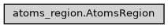

AtomsRegion
- class ase2sprkkr.sprkkr.atoms_region.AtomsRegion(name, slice, cell, pbc=[True, True, True], inherit_cell=False, atoms=None)[source]
AtomsRegion define a region of Atoms object, that can have its own cell and pbc.
E.g. this system:
|^^T^^^^^^^^^^^^^^^^^^^T^^| | | | | |__|___________________|__|
has two semiinfinite 3D periodic regions and a central 2D-symmetric region.
Class hierarchy
Constructor
- Parameters
name (str) –
slice (slice) –
cell (Union[Cell, ndarray]) –
pbc (List[Optional[bool]]) –
inherit_cell (Union[bool, List[bool]]) –
atoms (Atoms) –
- __init__(name, slice, cell, pbc=[True, True, True], inherit_cell=False, atoms=None)[source]
Atoms region defines a spatial part of an Atoms object. The cell can has zero vectors - such vectors are taken from the parent atoms object.
- Parameters
slice (slice) – Which sites (atoms) belong to the region
cell (Union[Cell, ndarray]) – The primitive cell
pbc (List[Optional[bool]]) – The peridodicity vector (see
ase.Atoms)inherit_cell (Union[bool, List[bool]]) – Inherit the cell and the pcb from the parent atoms for given axes. Use of this argument is the same, as setting
pcbto None andcellto[0,0,0]for the given axes.atoms (Atoms) – The master object, of which the region is defined
name (str) –
- static from_atoms(from_atoms, name, slice, inherit_cell=False, atoms=None)[source]
Creates a region from the property of the given atoms object. The pbc and cell are taken from it.
- Parameters
from_atoms (Atoms) –
name (str) –
slice (slice) –
atoms (Atoms) –
- property cell
Return the cell.
If the cell has some zero vectors, these are replaced with parent atoms cell vectors
- property pbc
Return the pbc
If the pbc has None items, these are replace with parent atoms pbc values
- property slice
- property symbols
Return the symbols in the region
Return ids of the sites, that belongs to the both regions
- property ids
Returns ids of sites that belongs to the region
- property set_of_ids
Returns set of ids of sites that belongs to the region
- property positions